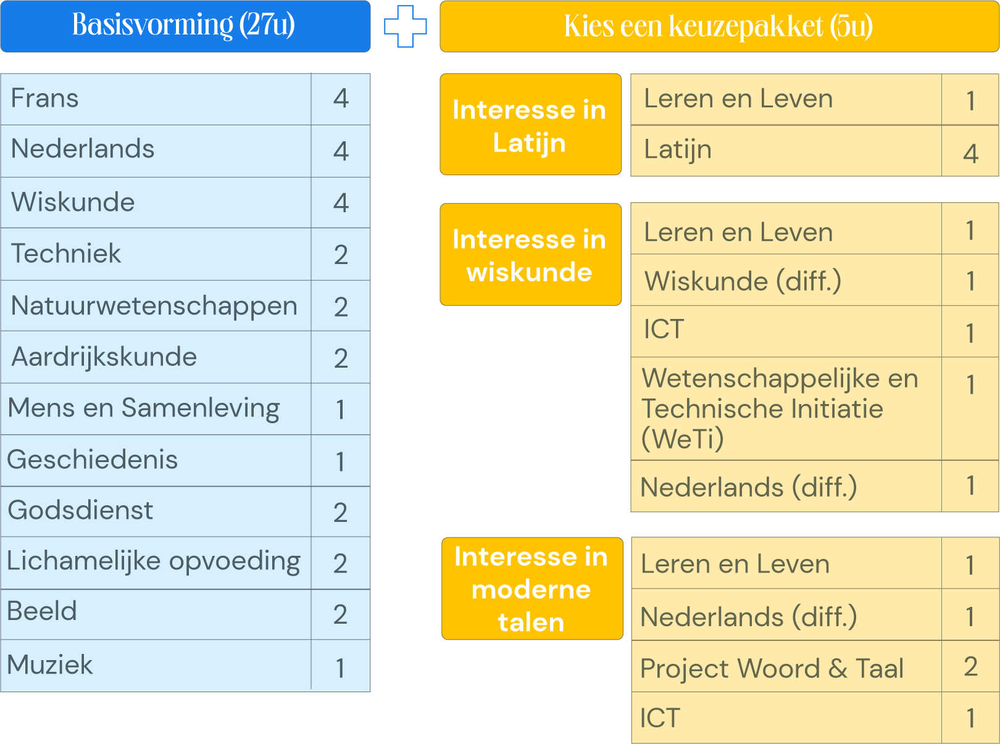

Lesuren

Wat extra uitleg bij de vakken uit de keuzepaketten
Leren en leven
Wat uitleg bij de vakken uit de keuzepakketten (1ste jaar) Leren & Leven In het uur 'Leren & Leven' leren de leerlingen werken met de digitale agenda en het digitaal leerplatform. Er wordt ingegaan op hoe de studie dient aangepakt te worden: leren plannen, studiemethodiek, gezonde levensstijl,... Ook keuzebekwaamheid (o.a. studiekeuze), mediawijsheid en pestpreventie komen aan bod.
WeTi
WeTI staat voor Wetenschappelijke en Technische initiatie en vertrekt vanuit een contextuele kennismaking met weten-schappen en techniek. Hierbij kunnen verschillende thema's aan bod komen. Onderzoekend leren is belangrijk.
ICT
In het vak ICT proberen de leerlingen een aantal ICT-vaardigheden goed onder de knie te krijgen: een goede tekstopmaak, verschillende bestandstypen herkennen, vlot en correct communiceren via het internet,...
Latijn
Tijdens de lessen Latijn leer je over de geschiedenis van de oude Romeinen, hun religieuze tradities en de verhalen die ze vertelden. Dit leer je gaandeweg door de taal te leren (lezen) die de Romeinen met elkaar spraken. Want hoe kan je beter een andere cultuur appreciëren dan door de taal van die cultuur te leren?
Nederlands (diff.) - Wiskunde (diff.)
Tijdens de differentiatie-uren Nederlands en wiskunde wordt er in verschillende niveaugroepen gewerkt, naargelang de leerling behoefte heeft aan verdieping / verbreding of remediëring.
Project Woord & Taal
In het project 'Woord & Taal' vertrekken we van taal als communicatiemiddel. Er is aandacht voor media, actualiteit en taaldiversiteit. Verschillende talen kunnen aan bod komen en/of gebruikt worden. Creatie, creativiteit en expressie staan centraal. Dit alles moet uiteindelijk resulteren in een toonmoment dat veel verschillende vormen kan aannemen.